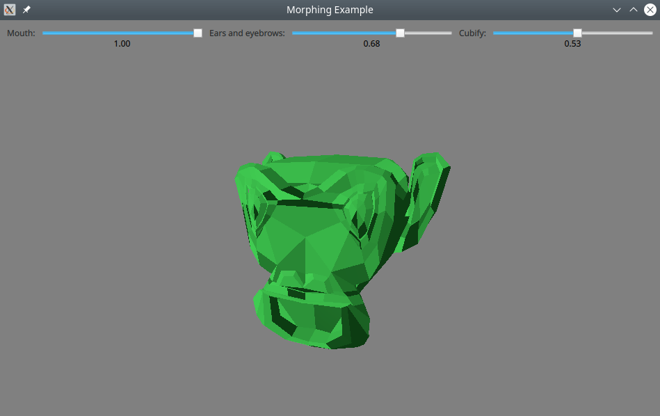
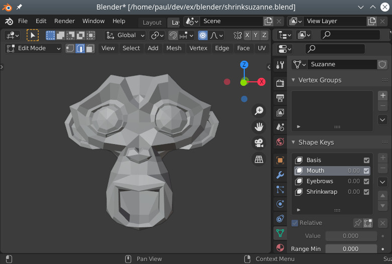

Qt Quick 3D - Morphing Example
Demonstrates how to control morphing animations in Qt Quick 3D.

This example shows how to control morphing animation on a model that has been imported from an external tool.
Creating a mesh
The mesh for the model was created using the Blender 3D modeling tool. In addition to the base shape, the mesh contains three morph targets (called shape keys in Blender).

It was exported from Blender as a glTF file, and imported using balsam.
Controlling the morph targets
Normally, morphing is controlled by a timeline animation or a property animation. In this example, we use sliders instead, to make it possible to experiment freely with combining different weights:
Label { text: "Mouth:"; }
RealSlider {
id: mouthSlider
from: 0.0
to: 1.0
}
Label { text: "Ears and eyebrows:" }
RealSlider {
id: earSlider
from: 0.0
to: 1.0
}
Label { text: "Cubify:" }
RealSlider {
id: cubeSlider
from: 0.0
to: 1.0
}
(RealSlider is a simple slider that provides a floating point value. It is borrowed from the effects example.)
We define a MorphTarget for each of the the targets in the mesh. Morph targets are the objects we bind to to control the morphing. Typically, they will be animated, but in this example we bind to the slider values:
MorphTarget {
id: morphtarget0
weight: mouthSlider.value
attributes: MorphTarget.Position | MorphTarget.Normal
}
MorphTarget {
id: morphtarget1
weight: earSlider.value
attributes: MorphTarget.Position | MorphTarget.Normal
}
MorphTarget {
id: morphtarget2
weight: cubeSlider.value
attributes: MorphTarget.Position | MorphTarget.Normal
}
Finally we create a model and bind the morph targets to the targets in the mesh:
Model {
source: "suzanne.mesh"
morphTargets: [
morphtarget0,
morphtarget1,
morphtarget2
]
materials: PrincipledMaterial {
baseColor: "#41cd52"
roughness: 0.1
}
SequentialAnimation on eulerRotation.y {
NumberAnimation { from: -45; to: 45; duration: 10000 }
NumberAnimation { from: 45; to: -45; duration: 10000 }
loops: Animation.Infinite
}
}
Note that the targets are matched by their position in the list: the names are not significant.
Files: